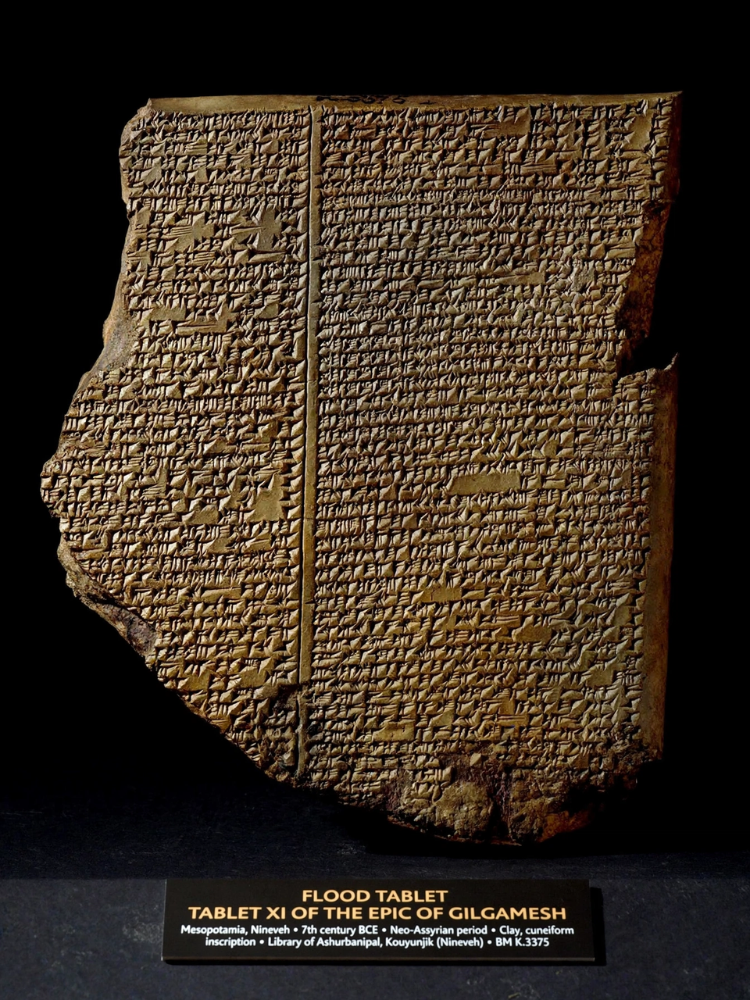

Epic of Gilgamesh
From Wikipedia, the free encyclopedia

The Epic of Gilgamesh is an epic poem from ancient Mesopotamia, originating as a series of Sumerian poems about the legendary king Gilgamesh of Uruk (c. 2100 BC) and compiled into an Akkadian epic by around 1200 BC. It is among the earliest surviving works of literature, famous for its flood narrative (the tale of Utnapishtim) that parallels the biblical account of Noah, and for its meditation on friendship, fame and mortality.
Composition and rediscovery
The standard Babylonian version is attributed to the scholar-priest Sîn-lēqi-unninni. Tablets were recovered from the library of Ashurbanipal at Nineveh in the nineteenth century; George Smith's 1872 reading of the Flood Tablet caused a sensation. Roughly two-thirds of the twelve-tablet epic survives, with new fragments still being identified.
Story
Gilgamesh, two-thirds divine and tyrannical, is opposed and then befriended by the wild man Enkidu, created by the gods. Together they kill the monster Humbaba and the Bull of Heaven sent by the spurned goddess Ishtar. Enkidu's death sends Gilgamesh on a quest for immortality to Utnapishtim, survivor of the great flood, who tells how the gods sent the deluge and granted him eternal life. Gilgamesh fails the tests of immortality, briefly gains a rejuvenating plant, loses it to a snake, and returns to Uruk accepting the fame of his works — the city's walls — as his legacy.
Influence
The epic's flood story, its themes of hubris and grief, and motifs like the plant of life influenced biblical and Greek traditions (Homer's epics echo its structures). It is a cornerstone of world literature curricula and of the modern understanding of Mesopotamian religion.